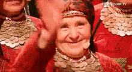

Бурановские бабушки на Евровидении
Бурановские бабушки
— это музыкальная группа из Удмуртии,
состоящая из пожилых женщин, которая стала известна благодаря своему яркому выступлению на конкурсе Евровидение 2012 года. Их песня "Party for Everybody" заняла второе место, и они покорили сердца зрителей своими незабываемыми образами и неповторимым исполнением.
Back